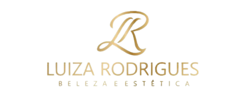

Agende seu horário conosco agora mesmo
Tintura com tinta profissional
Chapa
Cachos / Ondas
Escova
Penteado
Maquiagem
Nano pigmentação
Design de sobrancelhas
Design com henna
Brow lamination
Lash lifting
Spa dos pés
Limpeza de pele
A Luiza Rodrigues Beleza e Estética, localizada em Córrego Fundo, é uma empresa que nasceu de forma simples, a partir do sonho e da iniciativa da própria fundadora. Em 2014, com apenas 14 anos, ela começou atendendo na casa dos seus pais como manicure e pedicure.
Com o passar do tempo, foi se aperfeiçoando e, em 2016, passou a atuar também como cabeleireira, maquiadora e designer de sobrancelhas.
Sempre buscando crescer profissionalmente, em 2017 iniciou a graduação em Estética e Cosmetologia, concluindo em 2020, quando abriu sua própria clínica.
📍 Rua São Miguel Arcanjo, 236, Córrego Fundo
📞 (37) 99904-9543